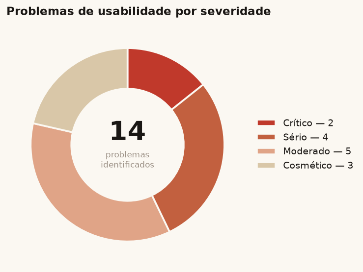
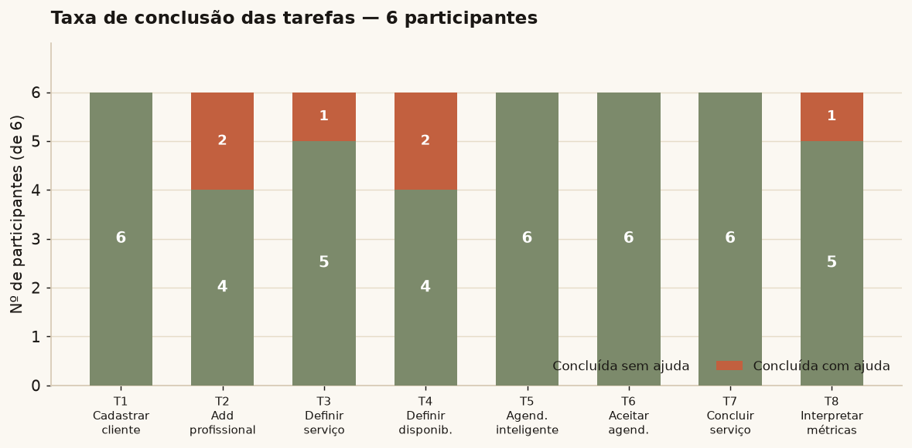
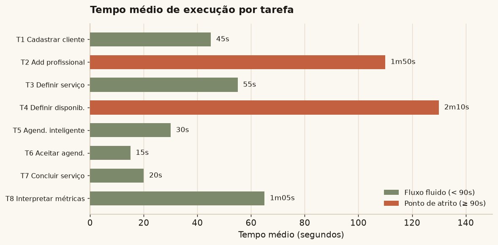
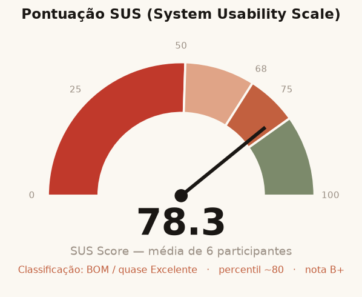
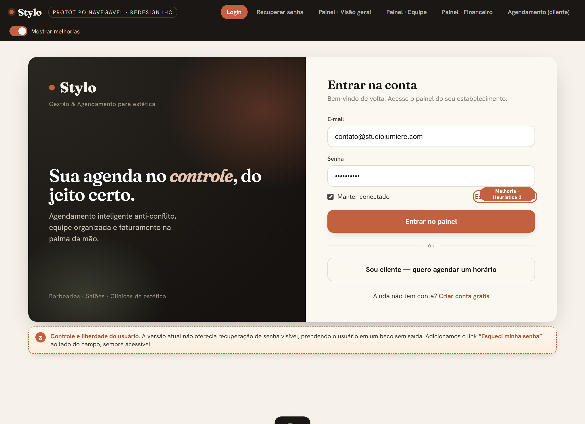
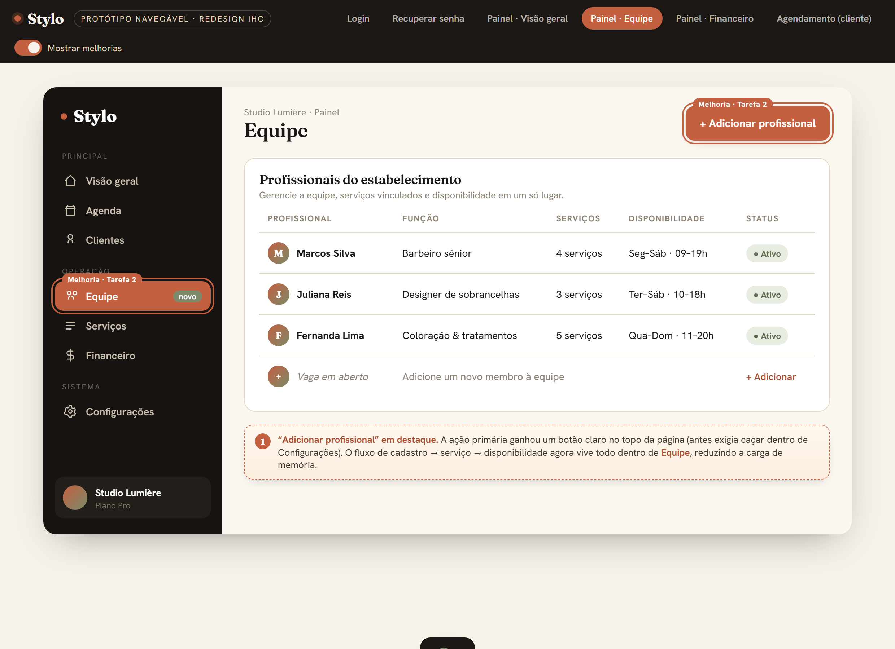
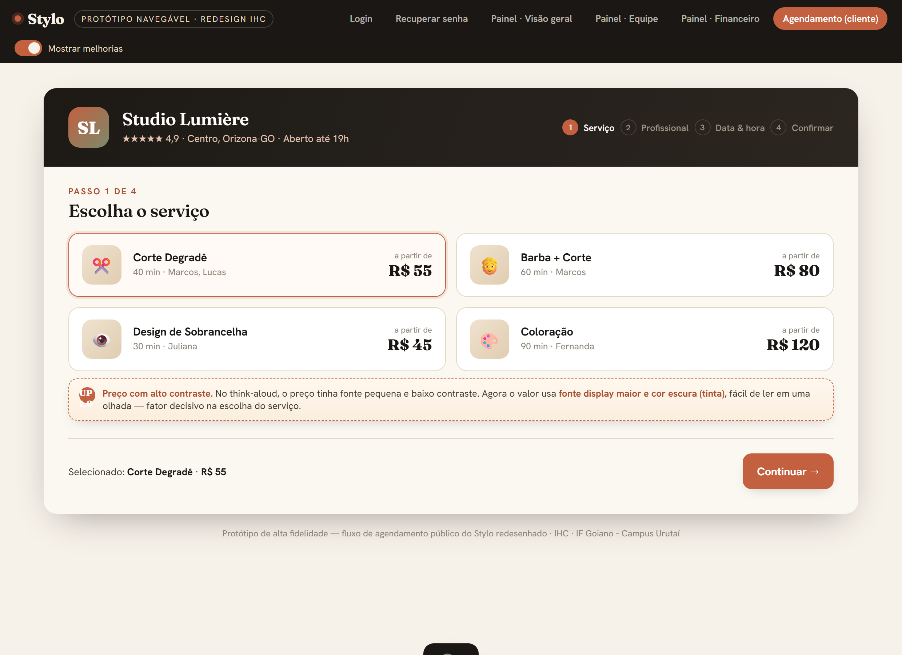
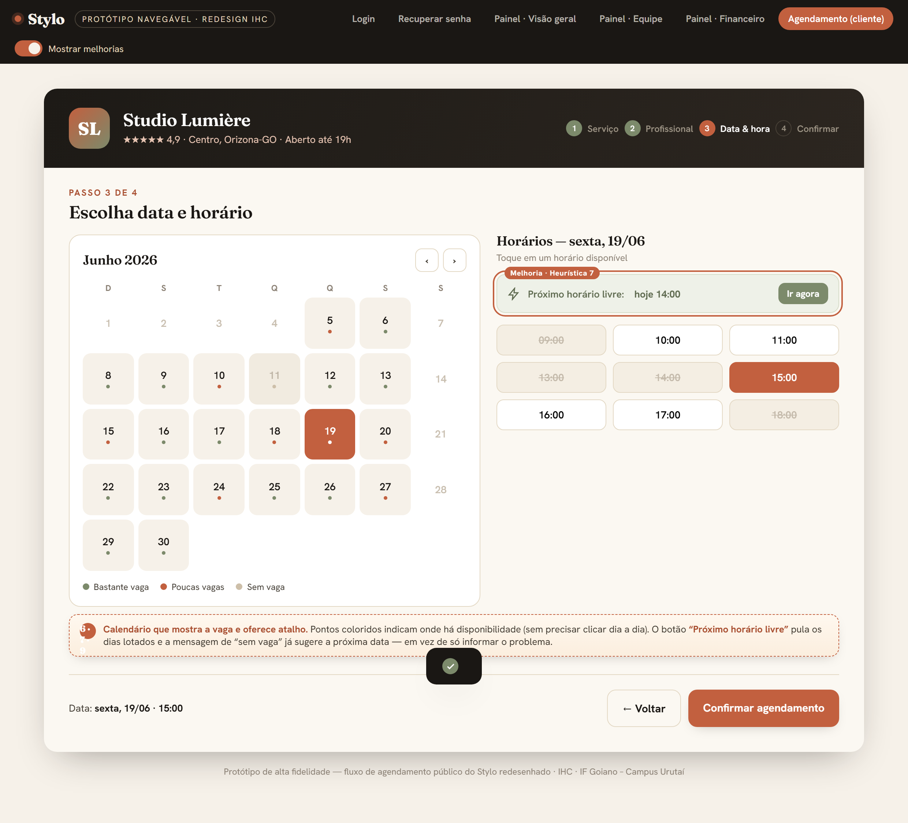
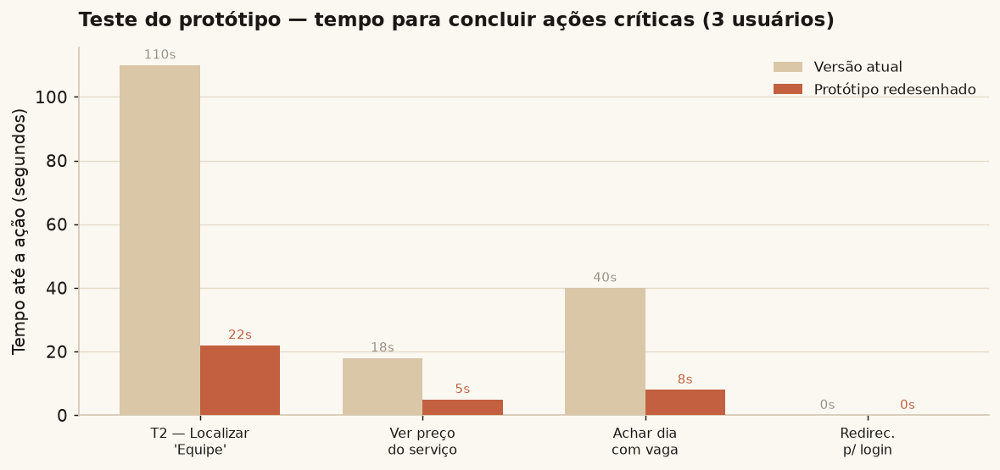

| Instituição | INSTITUTO FEDERAL GOIANO – CAMPUS URUTAÍ |
|---|---|
| Curso | Sistemas de Informação · Turma: 7º Período |
| Disciplina | Interface Humano-Computador (IHC) |
| Professora | Cristiane de Fátima dos Santos Cardoso |
| Alunos (dupla) | Arthur Faria Estrela e Sávio Issa de Sousa · Data: 16 de junho de 2026 |
Resumo. Este trabalho apresenta a avaliação de usabilidade da plataforma Stylo, um SaaS de gestão e agendamento para o setor de estética. A avaliação foi estruturada com o framework DECIDE (Preece, Rogers e Sharp) e combinou três técnicas complementares: avaliação heurística (10 heurísticas de Nielsen), o protocolo “Pensar em voz alta” (Think-Aloud) e um teste de usabilidade com 6 participantes do público-alvo, encerrado com o questionário padronizado SUS (System Usability Scale). A plataforma obteve SUS = 78,3 (classificação “Bom”, próximo ao limiar de “Excelente”), com fluxo principal eficiente e o algoritmo de agendamento inteligente como ponto forte unânime. Os principais atritos — arquitetura da informação para a gestão de equipe, contraste de preços, redirecionamento sem aviso para login e ausência de indicadores de disponibilidade no calendário — foram traduzidos em um protótipo navegável de alta fidelidade, submetido a um breve teste de validação.
O Stylo é uma plataforma SaaS (Software as a Service) de gestão e agendamento voltada ao setor de estética e beleza. O sistema atende estabelecimentos como barbearias, salões de beleza e clínicas de estética que desejam substituir métodos manuais (agenda de papel, anotações em aplicativos de mensagem) por uma solução digital centralizada de marcação de horários, organização da equipe e acompanhamento financeiro.
Tecnicamente, o produto é uma aplicação web responsiva, com front-end em React + TypeScript (Vite) e back-end em Java/Spring, integrando ainda notificações via WhatsApp. A interface adapta-se a desktops, notebooks e smartphones, cobrindo tanto o uso no balcão do estabelecimento quanto o agendamento feito pelo cliente em seu próprio celular.
A plataforma possui dois perfis de usuário claramente distintos, o que torna a avaliação de usabilidade especialmente relevante:
O DECIDE é um framework proposto por Preece, Rogers e Sharp (2005) para planejar e conduzir avaliações de usabilidade de forma sistemática. O acrônimo organiza a avaliação em seis etapas, garantindo que objetivos, métodos, questões práticas e éticas sejam definidos antes da coleta de dados. As etapas são: Determinar os objetivos; Explorar as perguntas; escolher (Choose) os métodos; Identificar questões práticas; Decidir sobre questões éticas; e Evaliar, interpretar e apresentar os dados.
A seguir, apresenta-se o que foi obtido em cada etapa para o Stylo.
| Etapa | Aplicação ao Stylo |
|---|---|
| D — Determinar os objetivos | Avaliar a facilidade de uso, a eficiência na execução das tarefas e a satisfação geral do usuário ao utilizar as funções principais da plataforma (agendamento público e gestão). |
| E — Explorar as perguntas | Os usuários conseguem concluir o fluxo principal de forma independente? A navegação do painel é intuitiva? A terminologia é compreendida? O cliente consegue agendar sem treinamento? |
| C — Escolher os métodos | Think-Aloud (desempenho real e modelos mentais), SUS (medida quantitativa padronizada) e entrevista semiestruturada (preferências, reações e frustrações). |
| I — Identificar questões práticas | Perfil: profissionais/gestores de estética e clientes finais, com níveis variados de experiência. Recrutamento de 6 participantes (faixa de 5 a 12 recomendada). Ambiente híbrido (presencial e remoto), em ambiente de homologação controlado. |
| D — Decidir sobre ética | Termo de consentimento e autorização de gravação; garantia de anonimato nos relatórios; confidencialidade dos dados de áudio/vídeo; e direito de interromper a avaliação a qualquer momento. |
| E — Avaliar e interpretar | Codificação dos incidentes do Think-Aloud, tabulação da matriz de tarefas, cálculo do SUS e triangulação com a avaliação heurística (Seções 5 e 6). |
A avaliação heurística foi conduzida com base nas 10 heurísticas de usabilidade de Jakob Nielsen. Dois avaliadores percorreram as telas críticas do Stylo (login, página pública de agendamento, seleção de data/hora, listagem de profissionais e painel) registrando violações. O quadro a seguir consolida os problemas por heurística.
| Heurística | Tela / contexto | Problema identificado |
|---|---|---|
| 1. Visibilidade do status do sistema | Login / Busca / Modal de cancelamento | Falhas de comunicação com o servidor não geram feedback imediato; falha de GPS não emite alerta; indicador de caracteres mínimos depende de mudança sutil de cor. |
| 2. Correspondência com o mundo real | Filtro de busca | Uso de valor de sistema (“distância 500”) para representar “sem limite” expõe a lógica interna; deveria usar termos naturais como “Qualquer distância”. |
| 3. Controle e liberdade do usuário | Login / Modal de cancelamento | Ausência de “Esqueci minha senha” prende o usuário; abertura automática do teclado no mobile empurra a interface e esconde os botões de ação. |
| 4. Consistência e padronização | Fluxo de agendamento | Botões de mesma função recebem rótulos diferentes (“Confirmar” vs. “Avançar”); falta padrão de nomenclatura e posicionamento. |
| 5. Prevenção de erros | Modal de cancelamento | Botão de confirmar permanece clicável com justificativa vazia/abaixo do limite; o ideal seria mantê-lo desabilitado preventivamente. |
| 6. Reconhecimento em vez de recordação | Seleção de data e hora | Calendário sem indicadores de disponibilidade obriga o cliente a clicar dia a dia e a memorizar quais datas já testou. |
| 7. Flexibilidade e eficiência de uso | Seleção de data e hora | Ausência de atalhos (ex.: “Buscar próximo horário livre”) torna a reserva repetitiva para usuários frequentes. |
| 8. Design estético e minimalista | Listagem de profissionais | Excesso de informação simultânea polui a visão; dados não essenciais deveriam ir para uma tela de detalhes. |
| 9. Ajudar a reconhecer e recuperar de erros | Login / Cadastro / Data e hora | Mensagens não explicam a causa raiz de forma construtiva; aviso de “Sem horários livres” não oferece caminho de recuperação. |
| 10. Ajuda e documentação | Perfil do profissional / Confirmação | Faltam tooltips e dúvidas rápidas sobre tolerância de atraso, pagamento e política de cancelamento. |

O público-alvo do teste foi composto por profissionais e gestores do setor de estética — donos de barbearias, salões de beleza e clínicas que ainda utilizam métodos manuais de gestão e agendamento, representando o perfil ideal para a transição digital proposta pelo sistema.
Os testes foram planejados em formato híbrido: sessões presenciais no ambiente de trabalho dos profissionais (observando o uso na rotina real) e sessões remotas por videochamada com compartilhamento de tela. Os participantes utilizaram seus próprios equipamentos (computadores, notebooks ou smartphones) para avaliar a responsividade, e o Stylo foi acessado em um ambiente de homologação controlado. A condução e o registro empregaram softwares de videoconferência com gravação nativa de tela e áudio.
O roteiro foi dividido em três fases: (1) preparação e contextualização, com assinatura do termo de consentimento e breve entrevista inicial; (2) execução de 8 tarefas; e (3) encerramento, com a sondagem de satisfação. As tarefas foram:
Sondagem pós-teste: em alinhamento com o DECIDE, aplicou-se o questionário quantitativo SUS seguido de uma breve entrevista qualitativa para identificar o principal ponto forte e a maior dificuldade.
O piloto foi executado com um colaborador interno que não participou do desenvolvimento das telas avaliadas, para validar a clareza do roteiro, aferir o tempo e confirmar a estabilidade do ambiente. Duração: 23 minutos (planejamento de tempo adequado). Ajuste de ambiente: na Tarefa 8, os gráficos não apresentavam variação suficiente; o banco de homologação foi populado com mais agendamentos fictícios. Interface: o agendamento inteligente fluiu com rapidez, mas houve hesitação na localização do menu de adição de membros da equipe — dado registrado para análise da taxonomia do menu. O roteiro foi aprovado para o público externo.
Foram recrutados 6 participantes voluntários com diferentes níveis de familiaridade com tecnologia. As sessões ocorreram em formato híbrido (presencial e remoto via compartilhamento de tela), com os usuários orientados a verbalizar seu raciocínio (Think-Aloud) durante a execução das 8 tarefas no painel do Stylo.
| Part. | Perfil | Idade | Nível de experiência |
|---|---|---|---|
| P1 | Dona de salão de beleza | 34 | Intermediário |
| P2 | Barbeiro autônomo | 45 | Iniciante |
| P3 | Gerente de clínica de estética | 29 | Avançado |
| P4 | Barbeiro | 27 | Intermediário |
| P5 | Designer de sobrancelhas | 31 | Iniciante |
| P6 | Dono de rede de barbearias | 38 | Avançado |
Local e duração: sessões presenciais no ambiente de trabalho e sessões remotas por videochamada; cada sessão durou em média ~23 minutos (referência do piloto). Dispositivos: equipamentos próprios dos participantes (desktop, notebook e smartphone). Softwares: videoconferência com gravação de tela/áudio e o Stylo em ambiente de homologação.
Complementarmente, realizou-se uma sessão dedicada de “Pensar em voz alta” no fluxo público de agendamento, com o participante Gustavo França (cliente real, formação Técnico em Informática), de Orizona-GO. A tarefa: acessar a página pública, selecionar o serviço “Corte Degradê”, escolher um profissional, marcar sexta-feira às 15h e concluir o agendamento, iniciando deslogado (obrigando a criar conta para finalizar).
A tabela a seguir tabula, para as 8 tarefas e 6 participantes, a conclusão sem ajuda, com ajuda, não concluída e o tempo médio.
| Tarefa | Descrição | Sem ajuda | Com ajuda | Não concl. | Tempo médio |
|---|---|---|---|---|---|
| T1 | Cadastrar cliente fictício | 6 | 0 | 0 | 45 s |
| T2 | Adicionar profissional à equipe | 4 | 2 | 0 | 1 m 50 s |
| T3 | Estabelecer um serviço | 5 | 1 | 0 | 55 s |
| T4 | Estabelecer disponibilidade | 4 | 2 | 0 | 2 m 10 s |
| T5 | Realizar agendamento inteligente | 6 | 0 | 0 | 30 s |
| T6 | Aceitar agendamento | 6 | 0 | 0 | 15 s |
| T7 | Concluir o serviço | 6 | 0 | 0 | 20 s |
| T8 | Interpretar métricas de faturamento | 5 | 1 | 0 | 1 m 05 s |


Ao final das sessões aplicou-se o System Usability Scale. A pontuação média entre os 6 participantes foi de 78,3, classificada como “Bom”, próxima ao limiar de “Excelente” (≈80,3) e acima da média de mercado (≈68).

Os incidentes verbalizados por Gustavo foram codificados pelo esquema de problemas de usabilidade (Interface/Conteúdo):
| Verbalização (resumo) | Código | Interpretação |
|---|---|---|
| “Interface limpa, fácil achar o botão de agendar.” | — | Interação sem atrito; AI e performance validadas. |
| “Preço com fonte pequena e baixo contraste, difícil de ler.” | UP 1.6 | Dificuldade de ver aspectos da interface. |
| “Fiquei na dúvida se o horário das 14h estava indisponível ou bloqueado.” | UP 2.2 | Incerteza sobre o conteúdo do texto. |
| “Cliquei em confirmar e fui jogado para o login sem aviso.” | UP 1.3 | Surpresa/confusão com o resultado da ação. |
| “Seria ideal avisar que o cadastro é necessário antes de redirecionar.” | UP 1.10 | Sugestão de redesign da interface. |
| “Voltei à confirmação com tudo preenchido; não perdi nada.” | — | Validação positiva: persistência dos dados. |
A triangulação entre avaliação heurística, Think-Aloud e teste de usabilidade revela um produto maduro no núcleo funcional, com atritos localizados na arquitetura da informação e no feedback. O SUS de 78,3 e a ausência de tarefas não concluídas confirmam que os fluxos essenciais cumprem seu propósito; os problemas concentram-se em eficiência e clareza, não em bloqueios funcionais.
Cruzando os dados, destacam-se quatro problemas que orientam o redesenho, em ordem de impacto:
Some-se a estes o problema estrutural de controle e liberdade (heurística 3): a ausência de recuperação de senha visível, que pode impedir o acesso autônomo à conta.
A partir dos problemas prioritários, foi construído um protótipo navegável de alta fidelidade (HTML/CSS/JS), reproduzindo as telas reais do Stylo com as correções aplicadas. O protótipo é interativo e pode ser explorado no arquivo `prototipo/index.html`, com um interruptor “Mostrar melhorias” que evidencia cada intervenção sobre a interface.
| Problema observado | Melhoria proposta no protótipo |
|---|---|
| “Equipe” escondida em Configurações (T2) | “Equipe” promovida a item de primeiro nível na barra lateral, com botão “+ Adicionar profissional” em destaque e fluxo cadastro→serviço→disponibilidade reunido. |
| Preço com baixo contraste (UP 1.6) | Valor exibido em fonte display maior, cor escura (tinta) e hierarquia clara “a partir de”. |
| Redirecionamento abrupto para login (UP 1.3/1.10) | Modal de aviso antes do redirecionamento, explicando a necessidade de conta e garantindo que as escolhas estão salvas. |
| Calendário sem indicadores (UP 2.2; heur. 6/7) | Pontos coloridos de disponibilidade por dia, legenda e atalho “Próximo horário livre”; mensagem de “sem vaga” sugere a próxima data. |
| Filtros de período pequenos (P6) | Segmented control Dia/Semana/Mês com alvos de toque maiores e estado selecionado claro. |
| Ausência de recuperação de senha (heur. 3) | Link “Esqueci minha senha” visível e tela de recuperação dedicada. |




O protótipo foi submetido a um teste de validação rápido com 3 usuários (1 iniciante, 1 intermediário, 1 avançado), focado nas ações antes problemáticas. Mediu-se o tempo até concluir cada ação, comparando a versão atual com o redesenho.

Os resultados indicam redução expressiva do tempo para localizar “Equipe” (de ~110 s para ~22 s) e para identificar dias com vaga no calendário (de ~40 s para ~8 s). Os 3 participantes encontraram o link de recuperação de senha imediatamente e nenhum foi surpreendido pelo redirecionamento, graças ao modal de aviso. A leitura dos preços deixou de ser citada como dificuldade.
A avaliação de usabilidade do Stylo, conduzida sob o framework DECIDE e apoiada por avaliação heurística, Think-Aloud e teste com usuários, demonstrou uma plataforma eficiente e confiável no núcleo funcional, com SUS de 78,3 e nenhuma tarefa não concluída. O agendamento inteligente e a preservação do estado em background destacaram-se como diferenciais de experiência.
Os atritos identificados não comprometem a operação, mas reduzem a eficiência e a clareza: arquitetura da informação da gestão de equipe, feedback no redirecionamento para login, indicadores de disponibilidade no calendário e legibilidade de preços e filtros. Todos foram endereçados no protótipo navegável, cujo teste de validação confirmou ganhos significativos de tempo e de compreensão.
Conclui-se que melhorias incrementais e de baixo custo de implementação — reorganização de menu, ajustes de contraste, modais de aviso e indicadores visuais — têm potencial para elevar a usabilidade do Stylo da faixa “Bom” para “Excelente”, reforçando o valor do processo de avaliação centrado no usuário ao longo do ciclo de desenvolvimento.